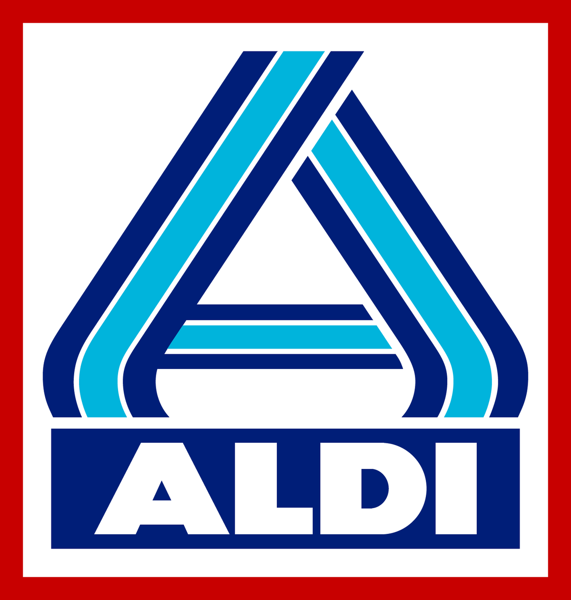
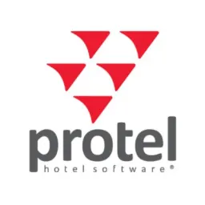
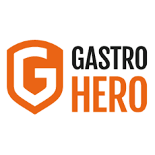
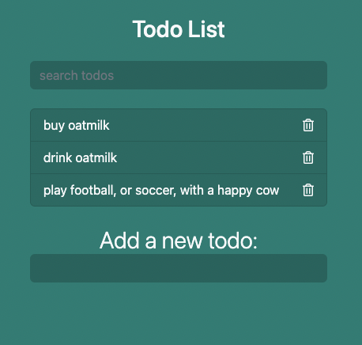
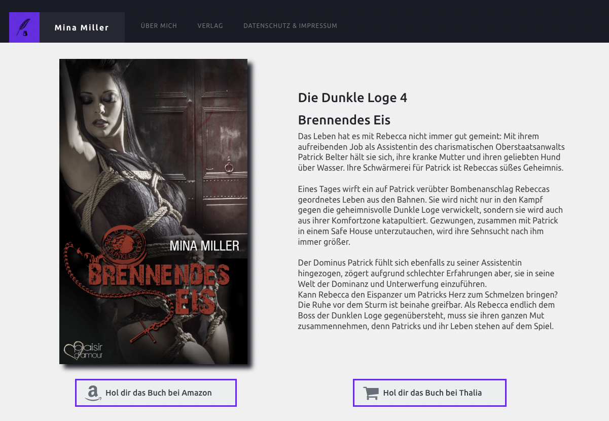

Thomas Werner
IT-TeamLead
Mülheim an der Ruhr, DE
werner.thomas(at)me.com
0172-522-1707
Social


Technologien


Skills
Language
Skills
Language
Work Experience
 IT-Teamlead / ALDI Nord
jul 2021 -
Teamleitung (Organisation & Führung)
- Das Team betreibt und managt unter anderem folgende Applikationen: SAP ARIBA, SAP S/4 MDM, Kontraktverwaltung, Informatica P360, Starlims
- Disziplinarische Führung von 8 Mitarbeitern
- FTE-Planung
- Durchführung von Vorstellungsgesprächen
- Incident- und Service Request Management
- ITIL-Problemmanagement
- Kommunikation mit IT- und Fachbereichen
- Arbeit / Unterstützung in Initiativen und Projekten
- Optimierung des Prozesses zum Versand von unternehmensweiten Stör- und Versandmeldungen
- Vertragsverhandlungen mit Dienstleistern
- Monitoring von Kundenzufriedenheit
- Budgetplanung
IT-Consultant / ALDI Nord
jul 2020 - jul 2021
2nd Level Support HR Applications ( LOGA & GFOS )
- Incident & Problemmanagement
- Störungsanalyse
- Dokumentation von Analysen & Lösungen
IT-Junior-Consultant / ALDI Nord
jul 2019 - jul 2020
2nd Level Support HR Applications ( LOGA & GFOS )
- Incident & Problemmanagement
- Störungsanalyse
- Dokumentation von Analysen & Lösungen
 Autor (nebenberuflich) / IST Studieninstitute
Autor (nebenberuflich) / IST Studieninstitute
2015 - jul 2020
Erstellung und Pflege von EDV Skripten für die Erwachsenenbildung
- Entwicklung und Ausarbeitung von Lerninhalten zu den Themen Einführung in die allgemeine EDV, MS-Office, Netzwerk & Datensicherheit
- Beteiligung an der Weiterentwicklung von Studienmodulen und aktive Unterstützung über den gesamten Prozess
- Technische Anpassung, Aktualisierung und Pflege von Lerninhalten
- Analyse und Auswertung von Studierendenfeedback
 Knowledge Base Manager / Servicedesk / Funke Mediengruppe
Knowledge Base Manager / Servicedesk / Funke Mediengruppe
jul 2017 - jul 2019
Aufbau, Planung und Umsetzung einer unternehmensweiten IT Knowledge-Base
- Projektverantwortung für die Implementierung des On- & Offboarding Prozesses im ITSM Tool
- Administrative Rolle im ITSM Tool (TOPdesk)
- Administrative Aufgaben im Service Desk
 Software Consultant / protel Hotelsoftware GmbH
jul 2016 - jul 2017
Installation und Konfiguration von Hard- und Software bei Kunden vor Ort & per Fernwartung
- Bearbeiten von Anfragen, Problemstellungen und Störungsmeldungen aus allen IT-Bereichen (Software, Hardware, Netzwerk, Peripherie)
- Planung und Durchführung von Anwenderschulungen
- Wartung & Wiederherstellung von SQL Datenbanken
 Content Management Specialist / Gastro-Hero (Studentenjob)
2014 - 2015
Konzeption von Internetauftritten
- inhaltliche Planung der Webinhalte
- Themenkonzeption
- Recherche
Adjustage Kranführer / Salzgitter Mannesmann
2014 - 2015
Fahren und bedienen von Kranfahrzeugen
- Ausloten und Einweisung unter Einhaltung der Sicherheitsbestimmungen
- Kommunikation zu internen Auftraggebern und externen operativen Dienstleitungspartnern
- Sicherstellung der Betriebsbereitschaft durch Störungsmeldung und ggf. Unterstützung bei Wartung und Fehlerbehebung
Gastronom / Selbstständigkeit
2003 - 2011
The Roots - Time also known as: Die Selbständigkeit, selbst & ständig.
- Führung von 10 - 20 Mitarbeitern
- Leitung von 3 Restaurants und Partyservice
- Partyservice bis 2000 Personen
- Warum erwähne ich meine Gastronomie Zeit überhaupt?
Dieser Abschnitt meines Lebens ist schon sehr lange her und auf den ersten Blick hat dies nicht viel mit einem Developer Job zu tun.
Jedoch hat mir die Gastronomie sehr viel beigebracht.
Man überlebt nicht 8 Jahre in dieser Branche, wenn man nicht auf Kundenwünsche eingeht, nicht ständig die Extrameile geht und nicht mit Menschen umgehen kann.
Diese Skills begleiten mich durch meine gesamte Karriere und ermöglichten es mir in jedem meiner bisherigen Berufe über den Tellerrand zu sehen und über das Geforderte hinaus zu gehen.
Education
Bachelor BWL / WIHOGA Dortmund
2014 - 2016
Staatlich geprüfter Betriebswirt für Verwaltung/Management, Hotel- und Gaststättengewerbe | Bachelor Degree EQ 6 + Ausbildereignung nach AEVO (IHK)
- Betriebswirtschaftslehre
- Sales & Marketing
- Rechnungswesen/ Controlling
- Wirtschaftsinformatik/ Digitalisierung
- Wirtschaftsmathematik/ Statistik
- Unternehmenssteuern
- Deutsch/ Kommunikation (u.a. Rhetorik-Training)
- Business-Englisch
Projekte
Mini Projekte


Größere Projekte
Minamiller.com
Webseite der Autorin Mina Miller
- HTML CSS JS
- Wordpress Oxygen
- Photoshop Illustrator
- Videoerstellung
Kräuterbuddha.com ( unplublished )

- Der Gott der Veganer? Kräuterbuddha.Privates Projekt, welches zum erlernen verschiedener Technologien dient. Im Aufbau.
- Node JS
- Mongo DB
- React